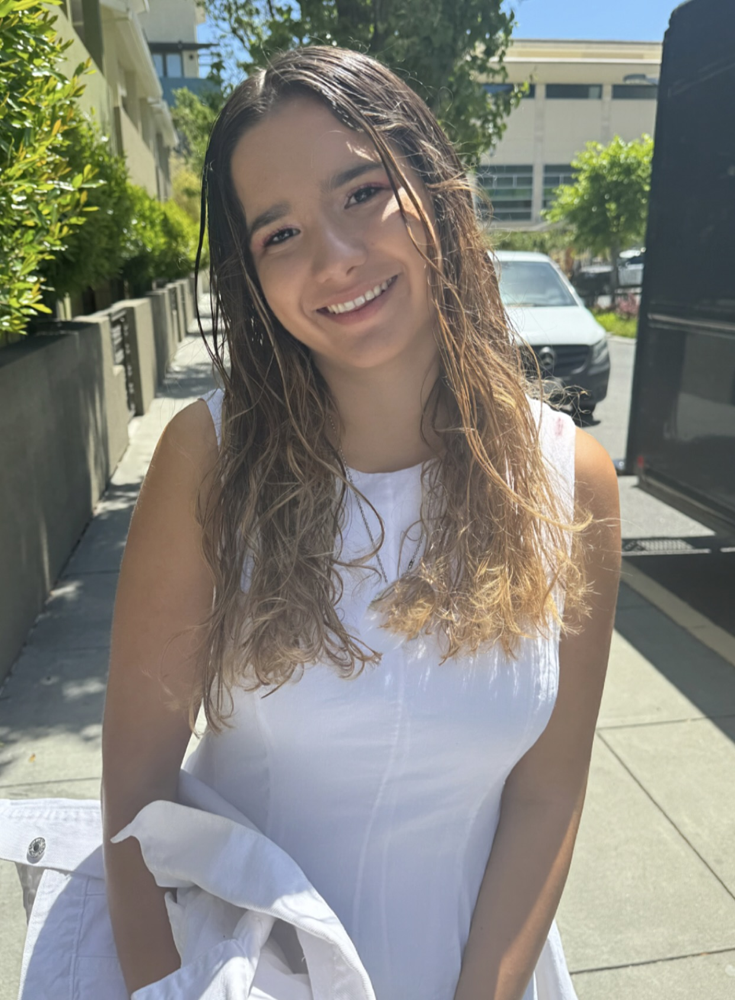

akouhana@stanford.edu
Ava Kouhana
MS Student @Stanford ICME (Computational and Mathematical Engineering)
I am an incoming ICME master's degree student at Stanford University. Prior to Stanford, I spent six
months
conducting research at Harvard Ophthalmology AI lab under the supervision of Dr. Mengyu Wang, focusing
primarily on Computer Vision tasks like Image Segmentation and Vision-Language Models. Before joining ICME ,
I have had the opportunity to work for six months supervised by Stanford Professor Craig Levin, researching
the application of Diffusion Models for image super-resolution.
My research interests primarily revolve around computer vision, deep learning, and generative AI, with a
growing interest for 3D modeling and video generation.
Publications
Conference Proceedings
Grant
- Recipient of 2024 IEEE Nuclear Science, Medical Imaging Trainee Grant (NSS MIC)